Unity3D is one of the most popular game engine for amateur and professional developers and studios. Unity3D is orginally designed for 3D game making with de-facto standarts , low cost and easy of use, but after Unity 4.3, it is also possible to create 2D games and applications. Unity is very flexible and powerful for creation multiplatform games and applications. There are so many platforms that you can deploy to with the Unity3D like Android, IOS, Windows, Universal Windows Platfrom, Mac, Linux, WebGL, PlayStation 4, PSVita, Xbox, Nintendo, Oculus Rift and more. Unity is a “One code-based for all platforms” or “Build once Deploy Anywhere” game engine. It means, you can create the project ones and build to all platforms.
Or choose one of them
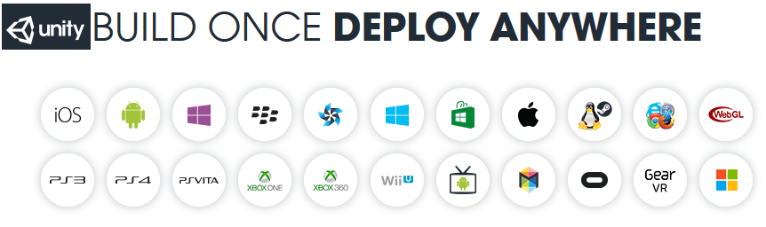
( Link to : http://deanlogic.com/blog )
There are lots of large and small companies, studios, indie developers that develop games with Unity3D. Like AngBirds, Assasin’s Creed: Identity, Temple Run Triloghy, Escape from Tarkov, Rick and Morty: Virtual Rick-ality and more (https://unity.com/madewith )
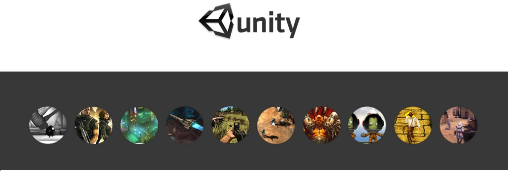
(Link to http://blog.soomla.com/2015/01/top-10-unity-games-ever-made.html )
Whether you are a professional team or freelancer, a hobbyist or a total begginer, there’s a Unity plan for you. If you or your company generate annual revenue or fund raised of $100k or less, you can select the PERSONAL membership. It is completely free. If you or your company generate annual revenue or fund raised of $200k or less, you can select the PLUS membership. It is $25 per manth with 1 year prepaid or $35 paid monthly. And there is an PRO plan for no limit on revenue or funding.It is $125 per month. (https://store.unity.com/ )
As
we said, Unity3D is one of the best game engines. Lets download and
install it. Go to https://store.unity.com/
and choose your Unity. Download the installer and follow the
installation instruscions. When installation finished, If you want
you can use PRO version of Unity with 30-day trial. Check the box
marker “activate a free 30-day trial of Unity Pro” and then ‘OK’.
You now have a 30-day trial of Unity PRO. When trial expires, if you
don’t want to buy the pro version of Unity3D, you can switch to the
free version.
Let's talk about scripting in Unity little bit and then start the using Unity. There was two programming languages that you can use in Unity. C# and Javascript (UnityScript) (and little bit Boo). As Unity Technolgies says as “ We are looking to get rid of UnityScript at some point”. And they got rid of UnityScript after Unity 2017. This means, you can not use Javascript in Unity anymore. If you have not use any programming language before, our suggestion is you should learn a basic programming language to get idea of programming before starting using Unity. Our suggestion : “Learning C# by Developing Game with Unity3D” book is writen by Terry Norton. An old version of Unity is used in the book but it is a good exercies to start Unity. And use https://docs.unity3d.com/ actively. It is a perfect documentation that created by Unity Technologies.
When you open the UnityEditor, the Home screent appers. If you have no existing Unity project on your disk, the screen display the LEARN tab. You can access the tutorials and resources. If you are new to using Unity you should spend time on this tutorials.
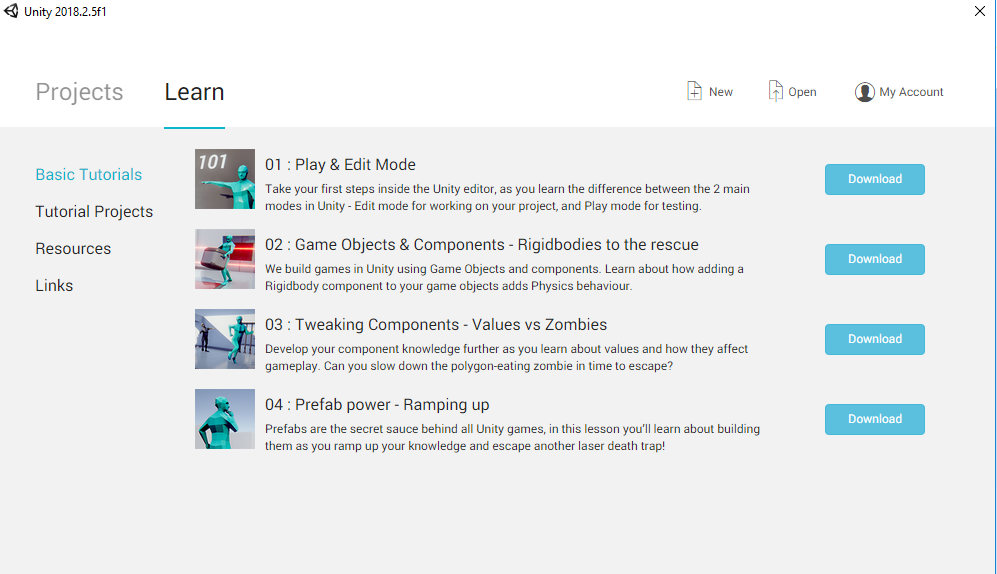
Learn Tab
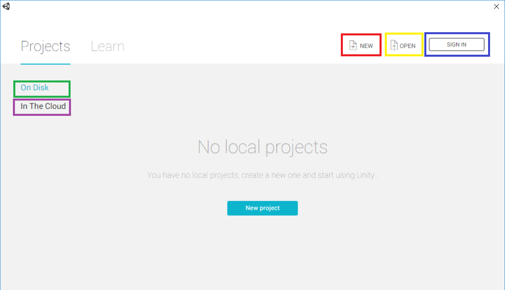
Projects Window
When open Unity, a project window appears. You can open a New Project with click NEW or you can open a existing project on your disk. If you sign in you Unity account,you can open a project that in the Cloud (Unity Collaborate).
Click “NEW” to see Create Project window.
Project Name field is to set the name of your project. Unity create a folder using this name to store all things that related to your project like assets, project settings, and other all things. Location field is where is your project folder will be. Template is to choose whether you project is 2D or 3D. Default is 3D but you change it in Editor later. Add Asset Package is to add assets that you want to add before starting project. You can do this after starting the project like going to Assets -> Import Package and select the package or using AssetStore window in the Editor. As you can see below, select the assets that what you want and click Done. When you are done, click the Create Project.
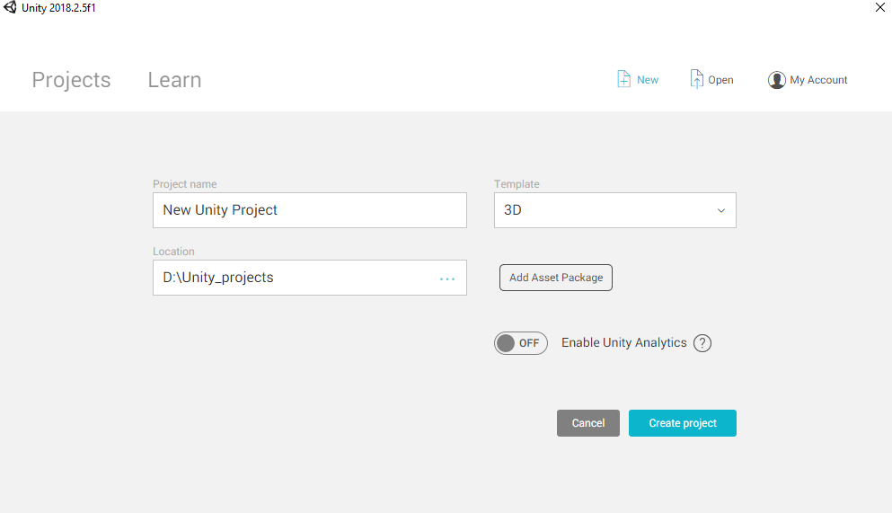
Create Project Window
Add Asset Window
If you have project on your computer or in the Cloud just select the project if the project appears in the window. If you can not see the project on the window, click the “OPEN” to locate and open it. Also you can open this window in the Editor like going to File -> Open Project.

Projects in your Computer
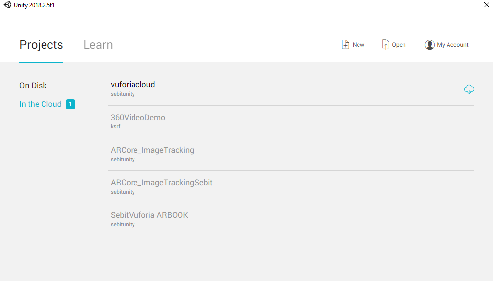
Projects in the Cloud
When you open a project, you can see the Unity version – Opened Scene name – Opened Project Name – Platform at the topbar of window.
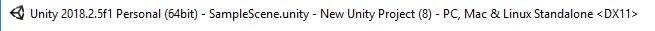
Below of the topbar, there are menu items like File, Edit, Assets, GameObject,, Component, Window and Help
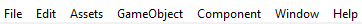
Below of the menu, you can see some tools to make easier for using Unity Scene
Hand tool, Move tool, Rotate tool, Scale tool, Rect tool, Move-Rotate-Scale. You click on one of these tools and you use it with mouse movements. Also you can select these tools using keyboard. Like for Hand tool, click ‘Q’ ; for Move tool, use ‘W’ and continue like that. Q, W, E, R, T ,Y.
There is field to select center of the object like “Pivot” or “Center”. It is name is “Toogle Tool Handle Position”. If “Center” is selected, the tool handle is placed at the center of the selection. If “Pivot” is selectedi the tool handle is placed at the active object’s pivot point. You can switch between them using “Z” key on keyboard.
Also there is a field to select rotation space like “Local” or “Global”. It is name is “Toogle Tool Handle Rotation”. If “Local” is selected, tool handles are in the active object’s rotation. If “Global” is selected, tool handles are in the Global rotation. You switch between them using “X” key.
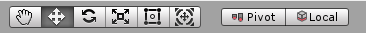
There is a 3 button at the middle of tool bar to control the GamePlay. “PLAY”, “PAUSE”, “STEP”. Play is to play/start the game play. Pause is to pause the gamePlay and Step is to change to next game frame. If you click this button when game play, the game is paused and the next frame is played on every click this button. If you want to play the first frame of the game, active the pause button before click play button.
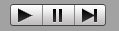
There are 5 field at the right of the toolbar. To use Unity Collaborate, to use Unity Services, to use Unity Account, to set layouts and to set Layout. There are lots of windows in UnityEditor. We can use layouts to locate these windows or we can locate them where we want.
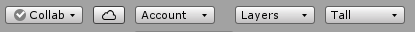
If you use default layout, you see the editor like this
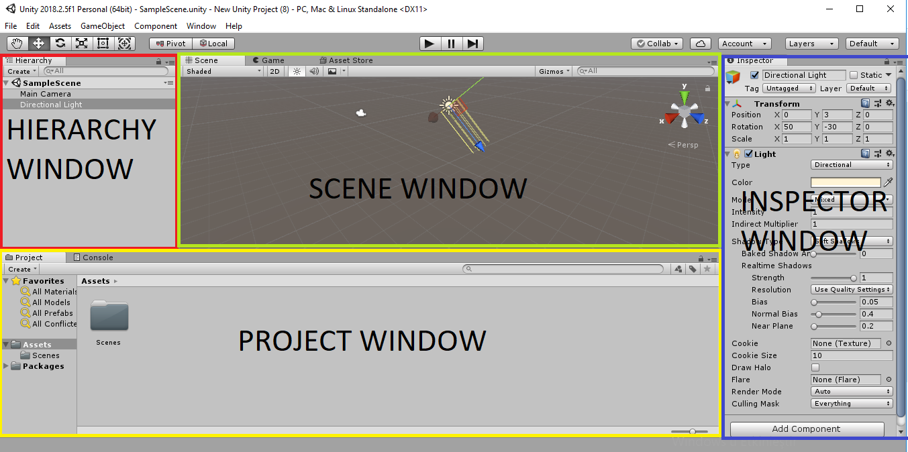
The Project Window displays your library of assets that are available to use in your project. When you import assets into your project, they appear here. You can control the all files that you create or import to project
|
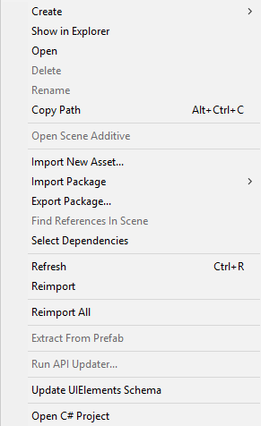 |
And also you can use ‘Create” button to create somethings. There are field to make easier to use the window like ‘Favorites” that you can use it to filter specific files, ‘Search’ that to search a file, ‘Specific Search’ buttons like “Search by Type”,”Searc by label” and “Save Search”, ‘File System”
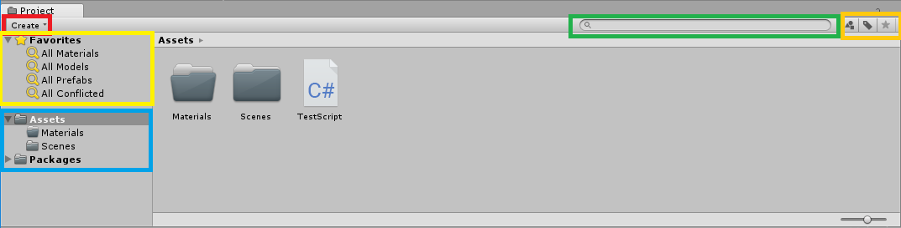
Project Window
You can find out more about Project Window in here : https://docs.unity3d.com/Manual/ProjectView.html
The Scene View allows you to visually navigate and edit your scene. The scene view can show a 3D or 2D perspective, depending on the type of project you are working on. You can control the all object that in the current scene. You stroll in the scene using mouse and keyboard. Like using right click to look around, left click to select an object, scroll wheel to drag or zoom in/out. If you hold to right click, you can stroll using Q,W,E,A,S,D keys.
There are field to controll the some basic things. You can controll the Draw Mode used to displat the Scene; you can switch between 2D and 3D view with using 2D button or you can open or close the light that is used in scene with using Light button; like light button you can also open or close the Audio; also there is a toggle groups that is used for various effects like skybox, fog, flares etc. There is a toggle that used to set the visibility of Gizmoses. You can search anyhing that you want to find with using Search bar. And there is a coordinates system viewer in that window.
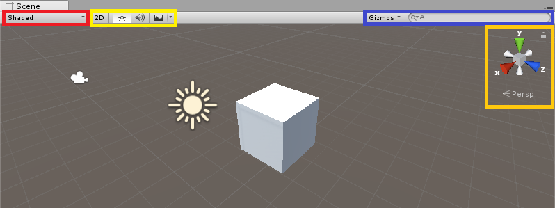
Scene Window
You can find out more about Scene Window in here : https://docs.unity3d.com/Manual/UsingTheSceneView.html
The game view is renderer from the Camare(s) in your game. You must use at least one camera but you can use cameras more than one. This window is that the player actually sees when they play the game. There are some basic field as in every window. If you have more than one camera, you can choose camera using Display buttton (you have to assign the displays to camera). You can set the aspect ratio using Aspect button. With using the scale slider, you can zoom in and examine areas of the Game screen in more detail. Maximine on Play button to make the Game view maximize for a full screen when you enter play mode. You can use Mute Audio button to mute all audios that play in the game play. Stats button is to show the Statistics. Gizmos button is to toggle the visibility of Gizmoses.
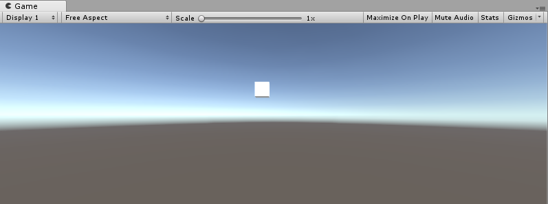
Game Window
If you click the Stats button, you see Statistics window right top of the window. In this window there are some statitics that related with Audio and Graphics like Batches, Tris count, Vertex count, Frame per Second (FPS) rate.
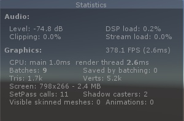
Statistics
You can find out more about Scene Window in here : https://docs.unity3d.com/Manual/GameView.html
This window contains a list of every GameObject in the current Scene. Some of these game object are instance of an asset like a sprite or a 3D model. If you add or remove an object into the scene, that object will appear or disappear in the Hiearchy window. If you don’t set the hierarchy of the object like parent and children, they are listed in the order they are made.

Hierarchy view ( https://docs.unity3d.com/ )
In this image, Child and Child 2 are the child objects of Parent. Child 3 is a child object of Child 2, and a descendant object of Parent.
If you want to make an object the child of another, drag and drop it onto the object. Like as below

You can find out more about Scene Window in here : https://docs.unity3d.com/Manual/Hierarchy.html
You can use this window to set and edit all properties and setting of almost everthing in the editor like components of an gameobject, project or quality setting of the project, properties of an asset.. etc. You should spend lots of time to understand this window. You will do almost everything about of your project. You have to understand the idea of this window. Work hard.
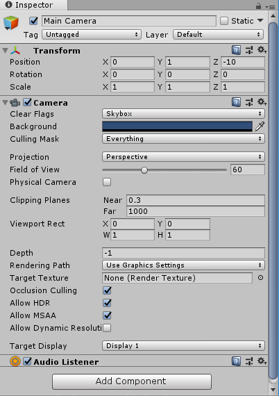
Inspector View
You can find out more about Scene Window in here : https://docs.unity3d.com/Manual/UsingTheInspector.html
Assets are representation of on item that can be used in the project. You can create an asset in Unity like an animator controller or an animation; also you can import it from outside like 3d model files, audio files, images, videos, texts or any of the other types of file that Unity supports.

Link to https://docs.unity3d.com
As you can import any 3D or 2D sources, you can create object in Unity that is called primitive objects. Cube, Sphere, Capsule, Cylinder,Plane and Quad are some of those. Try GameObject ->3D Object menu or right click in Hiearchy window.
There are two types of package. Asset Package that available on Unity Asset Store and Unity Package. There are thounds of assets in Asset Store. Some of these are free and some of these are paid. Go Window -> General -> AssetStore or use Ctrl+9 shortcut to open AssetStore window. It has very easy to use interface. Just search the asset and click import button after downloading. If you want to use an unityPackage that in you computer, double click on it or go Assets -> Import Package -> Custom Package and locate the package.
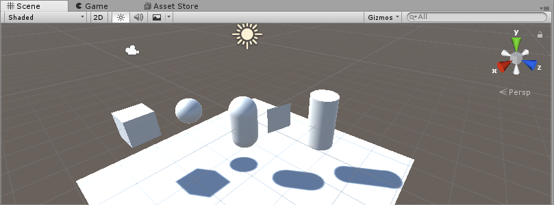
Unity Primitive Objects
As I said, Unity supports lots of platforms. If you go File -> Build Settings, you can see these platform. If you want to switch-change to a platform, choose the platform and click “Switch Platform”. If you have the sdk of that platform, Unity automaticly change the platform. If there is no module installed, open the download Page and download - install it. And also there are two button at the bottom of this window. ‘ Build’ and ‘Build and Run’. After you click “Build”, you choose the location where build files will be. If you click the “Build and Run”, after choosing the location, build files will execute automaticly.
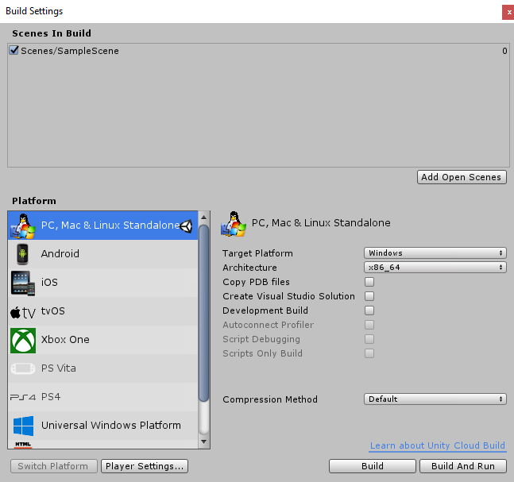
More detail about platform https://docs.unity3d.com/Manual/BuildSettings.html
Components (???)
A gameObject contains components like Scripts, Colliders, Rigidbody, Mesh renderer, Audio Source.. etc. All components are optinal but the Transform Component must. It is impossible to create a GameObject without Transform Component. To add new component to a GameObject, you can click the Add Component button in the Inspector Window.
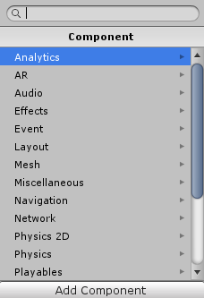